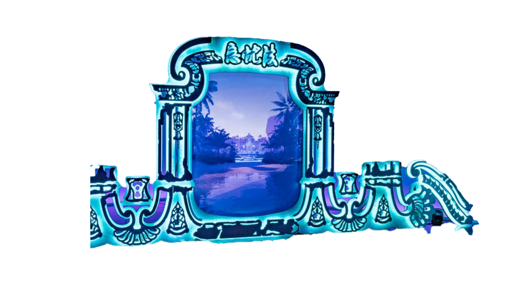
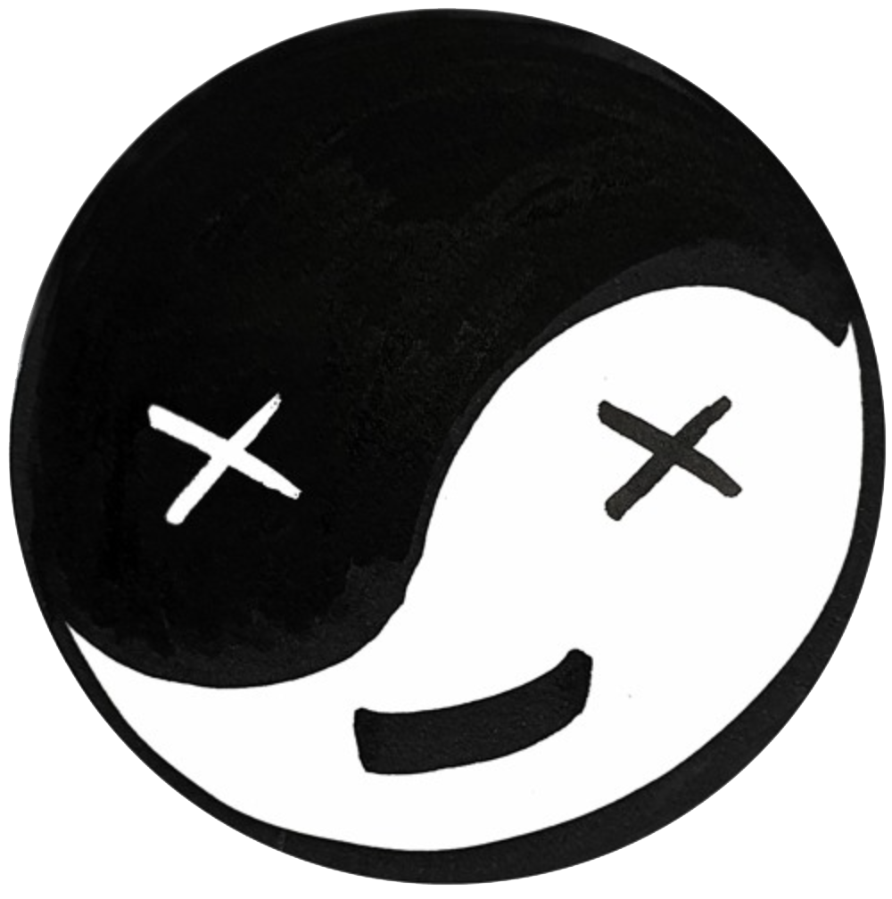
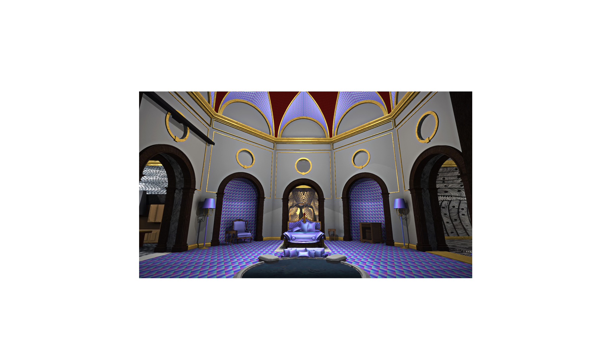
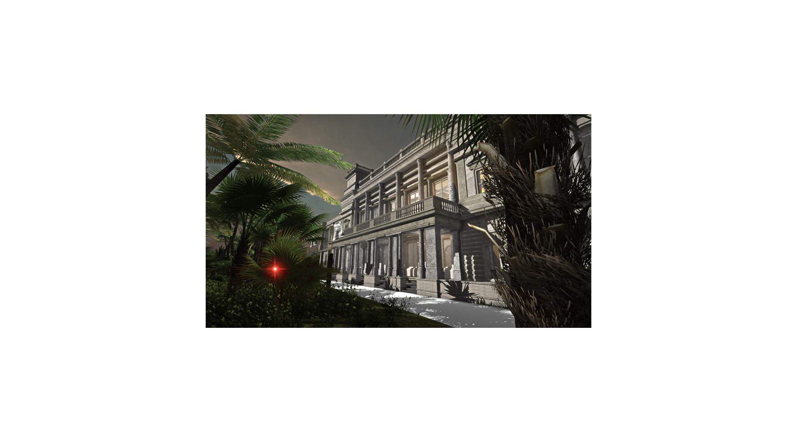
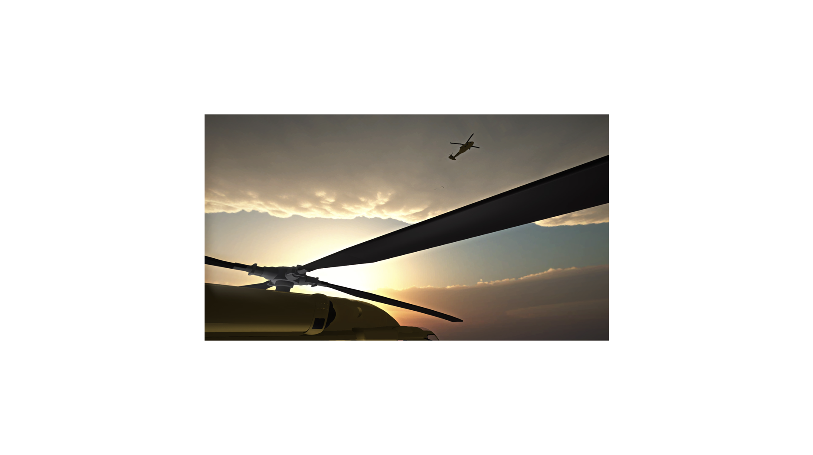
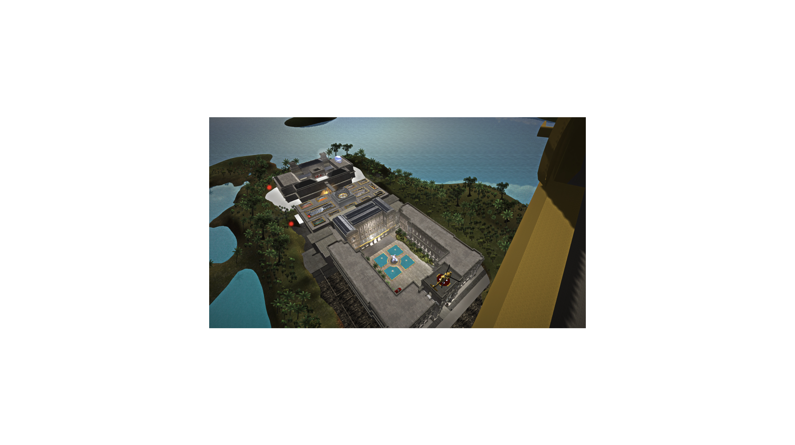
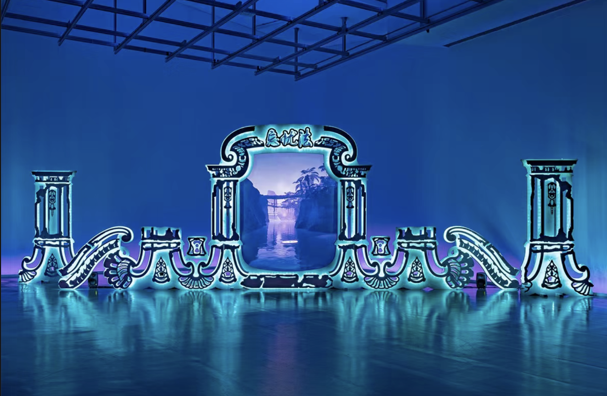

Welcome to the future
A lot of discussion around your work focuses on the role of technology within it—but are we perhaps overlooking how these are highly emotional narratives suffused with longing, shuttling between alienation and belonging?
A lot of work about AI abstracts technological phenomena and separates them from lived experience. But I have strong personal associations with technological objects, technology doesn’t exist separately from my attachment to it. I feel similarly about architecture. Across Southeast Asia, the tides of national or social change are all intertwined with architecture and design. It’s hard for me to disentangle my childhood memories of these places from actually seeing these buildings go up. What I’m creating isn’t just a critique of technology. It’s a critique intertwined with an engagement with the same subject.
2024
Within academia and the tech industry, there’s no such thing as a cohesive ‘artificial intelligence,’ but AI is still mythologized in Hollywood movies and sci-fi narratives as a sentient yet ‘othered’ non-human being. In your essay film Sinofuturism (1839-2046 AD) (2016), you use clips from British, American, and Chinese state media to piece together a proposition that Chinese workers are automatons poised to take over the world. Are you relating the conversation around AI to that of racialized labor?
LL: Take Singapore and Hong Kong. Both are successful because they’re interzone port cities. Their main value is being in the middle of things. Conventionally, having some kind of natural resource has been a catalyst for development. But in the case of Hong Kong and Singapore, this in-between status is profitable. It’s conducive to the import and export of goods, services, and people. There’s a whole spectrum of related questions about labor in relation to colonialism and globalization.How it relates to AI is very different. I’m not talking about how AI is developed in industry and academia, I’m talking about the notion of AI and autonomous work as a source of abundant knowledge production and mechanical labor. Look at ports. Dockyard workers in Singapore, HK, and so on, used to be the main source of casual day labor at the harbor. But sea freight ports are increasingly automated. In Rotterdam, they’ve built a fully automated part of the port where there’s no human work except for in the control room. Flows of people, processes, knowledge, and work, in relation to the global circulation of goods, have always been a part of these seafaring areas. Here, AI is part of automating the processes of how harbors are working, how infrastructure is developing.In Sinofuturism, AI is disenfranchised and nonhuman, but it also has a capacity for providing such a surplus of knowledge and mechanical work that people feel threatened by their obsolescence. Contrast this with the case of Malaysia, where the British imported people from the Empire to work in specific industries. People from Southern India worked in the rubber plantations, the Southern Chinese worked in the tin mines. Specializations arose from how the colonialists defined the suitability of people to roles. In terms of the Chinese diaspora, this happened differently to how it occurred in the Caribbean, in Americas, and in Southeast Asia. These were things I was looking at in Sinofuturism—which, in the case of the opium trade, is much more complicated than being just about exporting and importing labor.
AQ: Why does science fiction feel like such an intuitive way into processing colonial realities?
LL: Science fiction is an amazing resource for conceiving of things differently, but it’s important to remember many of today’s celebrated writers—like Ursula Le Guin, Samuel Delany, Octavia Butler, Philip K. Dick, Liu Cixin—are outliers in terms of science fiction. So much of the genre is imperial space colonization, or conquest of the alien. The writers who are disproportionately focused on, in terms of futurism and critiquing capitalism, gender politics, or colonial relations don’t represent the majority of science fiction. Fredric Jameson, in Archaeologies of the Future (2005), sketches out many interesting threads to do with utopian fictions that could also be seen as science fictions; ideal societies from Thomas More’s Utopia and Plato’s Republic to Russian science fiction authors of the 1920s. These writers were trying to create prototypes for social change.
AQ: Is there an analogue between world-building and nation-building?
LL: The first time I came across world-building was in science fiction: finding books with maps in the beginning, and encountering ideas of imagined places. Now, world-building is associated with video games, literature, or even the Marvel cinematic universe.It’s rare to see the process of nation-building as explicitly as you do in Singapore. I moved there from Hong Kong when I was 7. [The Singaporean government] is really overt about social engineering. I really felt that these nations were in the process of creating themselves in real-time. I had no sense of complex geopolitical or social history. In school, Singaporean history started when it became a British East India Company trading outpost.As a kid, Hong Kong and Singapore seemed as fictional as the books I read or the video games I played. At the time, I remember that the prevailing mood in Hong Kong was of change, even though it was ten years before the 1997 handover. I remember seeing the Bank of China skyscraper go up; much later, I realized that its construction was related to Hong Kong’s geopolitical situation. But back then, I saw it as a structure from a video game.

Lawrence Lek: Nepenthe

Unreal Estate
Unreal Estate (The Royal Academy is Yours) forms Chapter 9 of Lawrence Lek's Bonus Levels (2013-2016), a series of site-specific video games based on alternate versions of real places. Conceived as a virtual novel, Lek uses simulation as a medium to assemble collages of objects and places drawn from reality. The project is usually presented as a double-screen installation with video game and narrative walkthrough video displayed side-by-side.
Nepenthe (Summer Palace Ruins)
‘Nepenthe’ is an ongoing series of site-specific video games that explore themes of memory and identity in virtual worlds. Named after the fictional medicine for sorrow from Greek mythology, the installation was first realised at the 2021 Ljubljana Biennale within an ambient chill-out club environment. The meta-fictional installation creates an atmosphere of uncanny healing and escapism that suits our current age, while imagining a future of total automated entertainment. The installation includes a new soundtrack with original music – ambient, emotional, and melodic but with dark undercurrents. Evoking environmental music designed to operate almost subconsciously, the soundtrack incorporates sounds (synthesized and sampled) that signify how technology can enable future ‘cultures of wellness’ and ‘healing’ lifestyle design.
Back





